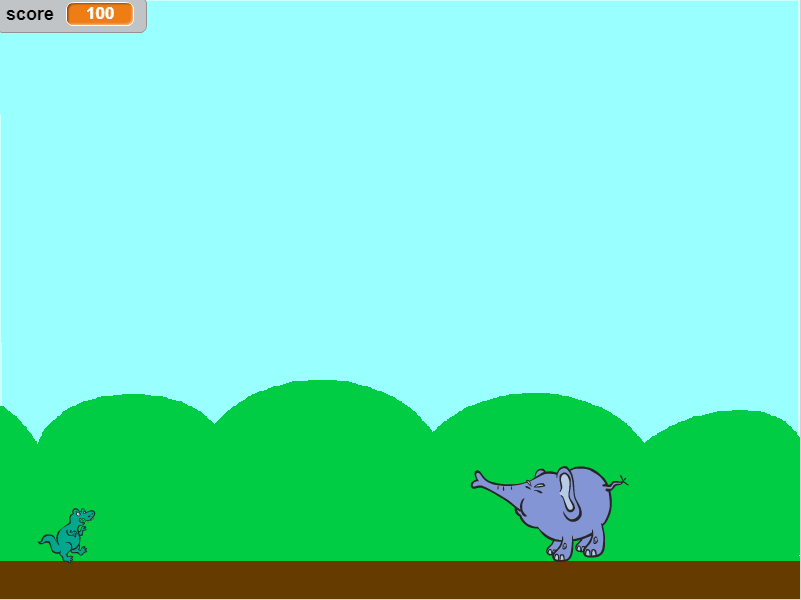
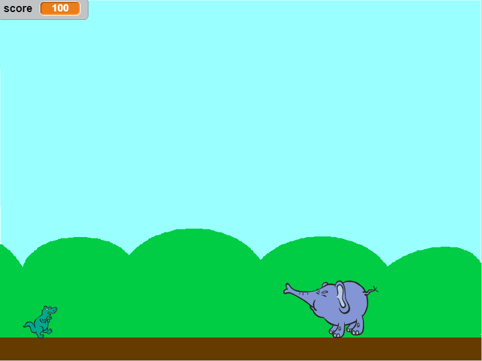

Dinosaur Dash is a platforming game that has a dinosaur avoiding enemies in order to reach the end.The scoring system that we added was a point system. Every time the dinosaur passed one screen, the point would go up by 20 until 500 when the game would be won. The use of randomness occurs with the stages as each screen is randomly picked. Over time the game gets more progressively difficult as the first 200 points have easier stages, and the next 260 have slighter harder stages, and the last stage is the hardest. The game ends when the dinosaur touches an enemy where the player would lose the game, or it would end when the points hit 500 where the player would win.
The game was created to have something fun to do to pass the time.The game was created with the idea of Super Mario Bros. in mind, but it was meant to be slightly different as it went more off of a point system instead of levels. One successful point was that we were able to create the concept of jumping and gravity where the dinosaur would fall down after it jumped. Another successful point was when we also implemented losing once the dinosaur touched an enemy. Both of these successes were also obstacles, and to overcome them, we experimented various algorithms. If more time was given, we would probably try to add more levels and try to change the end game.
This is an algorithm because it has a set of instructions that are used to do something. When the dinosaur reaches the right side of the screen, it will get moved back to the left side of the screen, and the background would change. Additionally, the point system would go up by 20, and each set of points have their own set of stages. This essentially changes the stage that the player is playing, and it would progressive the game, which is why it is a significant part of the game.
Benpigmin tells the tale of a portly pig by the name of Benpigmin and his journey to save Princess Kent. Throughout the story, the user is given options to choose what Benpigmin should do. To achieve the only possible good ending, Benpigmin has to defeat a cocky peacock and save Princess Kent.
Throughout the development process, there were multiple difficulties that made the coding challenging yet fun. One incremental process was when my partner and I created the flow map in order to map out the order of events for the program. By doing so, it was much easier to program the game as we knew what to do beforehand. An iterative process occurred when I found the opportunity to improve the program and make it more fun and complex. For that scene, I added a if-else statement in order to loop back to a previous scene. To ensure that users could not loop back to that scene forever, I added a count variable that leads to a different ending, and implementing this was actually a difficulty faced while programming the code. When I first implemented it, my defined function would not properly recognize the count variable. To fix it, I searched up how to solve it and found out I could use "global" to properly recognize the variable. Another difficulty occurred syntactically, where there were simple mistakes that prevented scenes from running. To fix these mistakes, I had to go over the code thoroughly to see what went wrong.
Dividing the code into functions is procedural abstraction as each scene is implemented separately, which simplifies the code. In doing so, one advantage is that the code is no longer a huge mess, making it a lot easier to read and work on as a whole. Furthermore, each function calls another function, which allows having one function be called to have the whole thing run like a procedure. Had I not divide the code into functions, it would have been more difficult to program the if-else statements to give the user choices and lead to different scenes.
One story that I particularly liked was Mr.B. I liked this story because each scene was very descriptive, and there were multiple endings. Each ending was unique, which made every decision truly matter. This drew me in and got me interested in the story. Another story that I enjoyed was Adventure Time. Each ending was different with surprises along the way which really pulled me in and made the story interesting and fun.